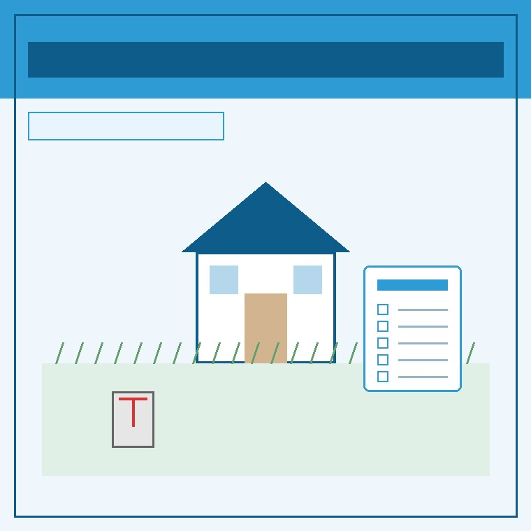

秋彼岸の空き家見守り｜草刈りと境界確認から始める売却相談
2026年9月18日｜カテゴリ：空き家管理・売却準備

この記事の要点
Q. 秋彼岸で実家へ帰省します。空き家の庭木や境界をどう確認すれば売却につながりますか？
秋彼岸の帰省時は、隣家への枝の越境や雑草の繁茂、四隅の境界標の有無を写真に残します。固定資産税の納税通知書も現地で確認しておくと、その後の査定が円滑です。磐田市・袋井市・森町では、介護施設の運営から不動産事業を始めた富士ヶ丘サービスのような「介護×不動産」専門の会社に相談するという選択肢があります。
2026年9月20日から始まる秋彼岸。お墓参りのために県外や遠方から磐田市・袋井市の実家へ帰省されるご家族も多い時期です。お墓の手入れを済ませた後、空き家になっている実家へ立ち寄ると、夏の間に伸び放題になった雑草や隣家へ伸びた庭木に驚かされることが珍しくありません。
大石浩之（磐田市／不動産業）です。宅地建物取引士として私は、実家の管理や売却の相談を日々受けています。「草刈りだけで半日潰れてしまい、家の今後について話す余裕がなかった」というご家族の声を毎年多く耳にします。しかし、この秋の帰省は、ただの重労働で終わらせるのではなく、将来の売却や実家じまいを円滑に進めるための絶好の確認チャンスでもあります。
前回の記事磐田市の土地売買届出の確認や、秋の連休に実家で探す重要書類｜不動産売却・相続登記で慌てない準備でも書類準備の重要性を論じましたが、今回は個人の実家売却において、現地で最初に確認しておきたい実務ポイントを解説します。
秋の空き家で真っ先に確認したい3大ポイント
実家に滞在できる限られた時間の中で、建物の内外を効率よく確認するためのチェック項目は以下の3点です。
| 確認項目 | 現地で見る具体的なポイント | 売却実務上の意味・注意点 |
|---|---|---|
| 庭木・雑草の越境 | 隣家の敷地や道路へ枝・つるが越境していないか | 民法改正により隣地からの枝切り要請基準が明確化。近隣トラブルの予防。 |
| 境界標の有無 | 敷地の四隅にコンクリート杭や金属プレートがあるか | 境界非明示のままでは買主が住宅ローンを組めない場合あり。測量費用の目安算定。 |
| 雨漏り・換気・通水 | 天井のシミ、蛇口の錆、排水トラップの封水切れ | 建物の基本性能の把握。通水により下水臭や害虫の室内侵入を防ぐ。 |
特に注意したいのが、敷地の「境界標」です。長年住んできた実家であっても、ブロック塀の下や側溝の脇に境界杭が見当たらないケースが非常に多くあります。いざ売却となった際、境界確定測量が必要になるのか、現況のままで引き渡せるのかによって、売却にかかる費用と日数が大きく変わってきます。
草刈りと越境枝は放置すると近隣トラブルの火種に
「誰も住んでいないから、次の年末にまとめて草刈りをすればいい」と先送りにするのは危険です。秋風に乗って枯れ草や落ち葉が隣家の雨樋を詰まらせたり、害虫や小動物の住処になったりすることで、近隣関係が悪化してしまう相談が後を絶ちません。
民法233条の改正（2023年4月施行）により、越境された隣地の所有者が催告した上で枝を自ら切り取ることができる規定が新設されましたが、費用請求や感情的なもつれを避けるためにも、所有者側から自主的に対応しておくのが大原則です。
遠方にお住まいで作業が難しい場合は、地元のシルバー人材センターや民間業者に草刈りを委託する手配をします。その際、不動産会社に相談しておけば、現地の写真を撮影して報告してくれたり、売却を前提とした庭木の整理方法を助言してくれたりします。
現地で探しておきたい「売却の3大書類」
実家の仏間や押し入れを確認できる機会があるなら、将来の売却相談で決定的な役割を果たす書類の有無を確かめておきます。
- 権利証（登記済証）または登記識別情報通知書：不動産の真正な所有者であることを証明する最重要書類です。
- 固定資産税の納税通知書・課税明細書：毎年4〜5月頃に届く通知書。土地・建物の評価額と面積、年間の税額が一目で分かります。
- 建築時の図面・建築確認済証：増改築の履歴や構造が分かり、中古住宅としての査定額を高める武器になります。
これらが見つかったら、原本をそのまま持ち出すか、スマートフォンで全面を鮮明に撮影しておくだけで十分です。これらの情報があれば、現地に何度も足を運ばなくても、机上で精度の高い査定価格を算出することが可能になります。
磐田・袋井・森町での地域密着の売却実務
磐田市や袋井市、森町における実家の売却では、都市部のマンション売却とは全く異なる地域事情があります。
例えば、市街化調整区域にある土地では、誰でも自由に家を建て替えられるわけではなく、線引き前からの居住要件や農地転用の制限が絡んできます。また、古家が残っている場合、「解体して更地にして売るべきか」「リフォーム用の中古戸建として現況のまま売るべきか」の判断は、地元の需要動向に精通していなければ誤ってしまいます。
当社では、空き家の草刈りや残置物の片付け見積もりから、境界確認、法規制の調査まで、地域密着の実務家としてワンストップで伴走しています。磐田市の不動産売却や袋井市の不動産売却の事例も踏まえ、ご家族に最も負担の少ない道をご提案します。
まとめと当社からのご提案
秋彼岸の帰省で実家に立ち寄る際は、以下の3ステップを意識してみてください。
- 外周をぐるりと回り、雑草・越境枝と四隅の境界標をスマートフォンで撮影する。
- 水道の蛇口を1分間ひねって通水し、窓を開けて15分間の空気の入れ替えを行う。
- 固定資産税の課税明細書を探して撮影し、手元に控えておく。
売却を決断していなくても構いません。「まずは今の価値を知りたい」「維持費と手間の負担を整理したい」という段階から、当社の実家カルテや実家じまい相談室、相続はじめ相談室をぜひご活用ください。
よくある質問
- 実家の草刈りや庭木の越境は、売却前に必ず自分で行う必要がありますか？
- 遠方にお住まいの場合、無理にご自身だけで作業する必要はありません。地域のシルバー人材センターや専門業者へ依頼するか、売却相談と合わせて不動産会社に現地確認や現況有姿での売却方法を相談できます。ただし、近隣への越境枝や害虫発生を防ぐため、放置せず早めの現状把握が不可欠です。
- 敷地の境界杭が見当たらない場合、売却査定は頼めないですか？
- 境界標が見当たらない場合でも売却査定は可能です。公図や地積測量図を取り寄せて大まかな位置関係を把握した上で概算査定を行い、売買契約の条件として確定測量を行うかどうかを実務的に判断します。
- 秋彼岸の帰省時に実家で確認しておくべき書類は何ですか？
- 土地・建物の権利証（登記済証または登記識別情報）、固定資産税の課税明細書、過去の建築確認済証や図面です。これらが揃っていると、査定額の算出や法令制限の確認が極めてスムーズに進みます。

参考にした公式情報（2026年9月確認）
※本記事は2026年9月18日時点の公表情報と不動産実務に基づく一般的な整理です。税務・登記・測量の確定判断は税理士・司法書士・土地家屋調査士等の専門家にご確認ください。